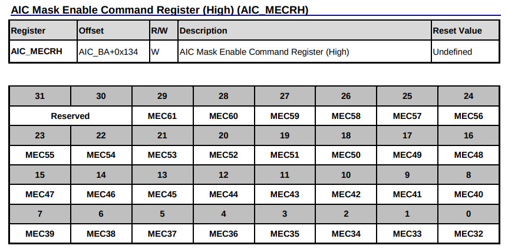
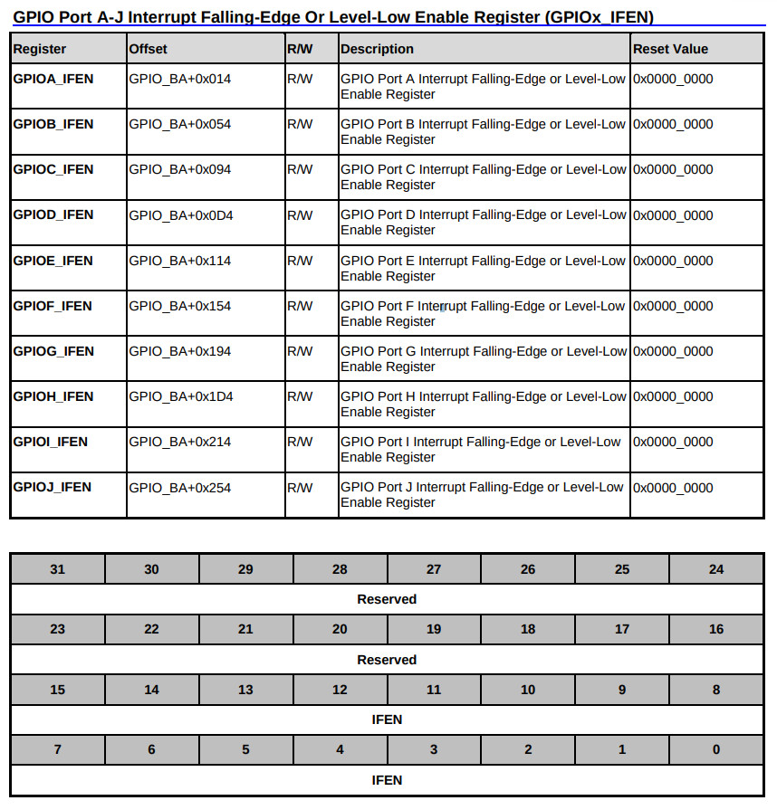
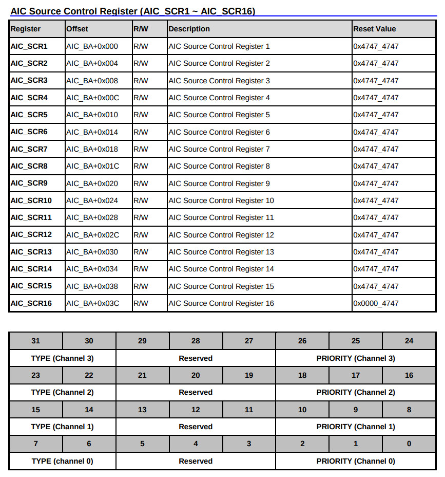
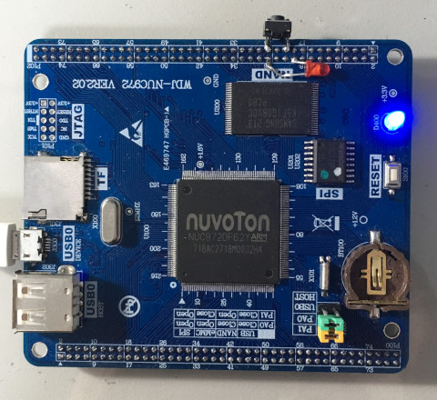
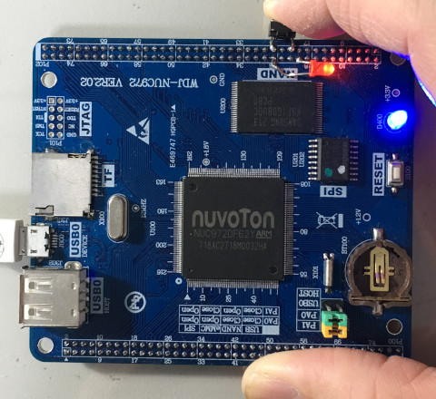

參考資訊：
https://github.com/OpenNuvoton/NUC970_NonOS_BSP
GPIO Interrupt = 57
AIC Mask



.equ GPIOB_DIR, (0xb8003000 + 0x40)
.equ GPIOB_DATAOUT, (0xb8003000 + 0x44)
.equ GPIOB_DATAIN, (0xb8003000 + 0x48)
.equ GPIOB_IFEN, (0xb8003000 + 0x54)
.equ GPIOB_PUEN, (0xb8003000 + 0x60)
.equ CLK_PCLKEN0, (0xb0000200 + 0x18)
.equ AIC_SCR15, (0xb8002000 + 0x38)
.equ AIC_MECR, (0xb8002000 + 0x130)
.equ AIC_MECRH, (0xb8002000 + 0x134)
.equ AIC_EOSCR, (0xb8002000 + 0x150)
.text
.align 2
.global _start
_start: b reset
_undef: b .
_swi: b .
_pabort: b .
_dabort: b .
_reserved: b .
_irq: b .
_fiq: b fiq_handler
reset:
mrs r0, cpsr
bic r0, #0x40
msr cpsr_c, r0
ldr r0, =AIC_MECRH
ldr r1, =(1 << 25)
str r1, [r0]
ldr r0, =AIC_SCR15
ldr r1, [r0]
and r1, #0xfffff8ff
str r1, [r0]
ldr r0, =CLK_PCLKEN0
ldr r1, [r0]
orr r1, #(1 << 3)
str r1, [r0]
ldr r0, =GPIOB_DIR
ldr r1, =(1 << 0)
str r1, [r0]
ldr r0, =GPIOB_PUEN
ldr r1, =(1 << 1)
str r1, [r0]
ldr r0, =GPIOB_IFEN
ldr r1, =(1 << 1)
str r1, [r0]
ldr r0, =GPIOB_DATAOUT
ldr r1, =(1 << 0)
str r1, [r0]
b .
fiq_handler:
ldr r0, =GPIOB_DATAOUT
ldr r1, =~(1 << 0)
str r1, [r0]
ldr r0, =AIC_EOSCR
ldr r1, =1
str r1, [r0]
subs pc, lr, #4
.end
完成

